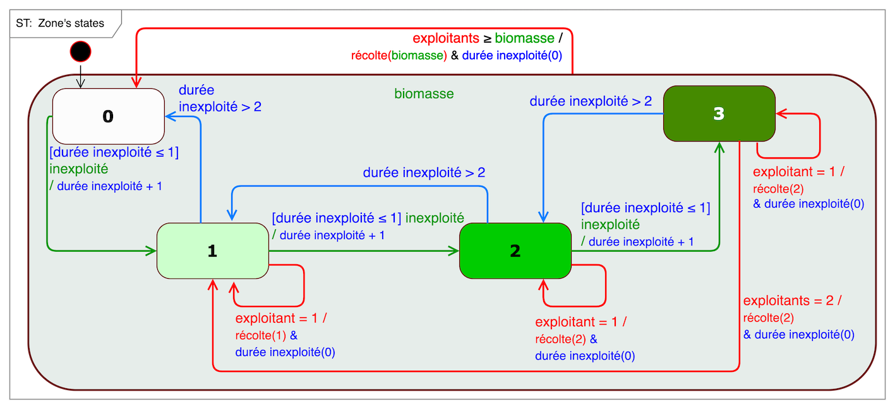

ReHab

Re(source)Hab(itat), jeu de rôle assisté par ordinateur
ReHab est un jeu de rôle assisté par ordinateur qui vise à promouvoir l'importance de la communication, par le biais de l'apprentissage par l'expérience, dans le contexte de la gestion et de la conservation des ressources renouvelables.
Motivation pour sa création
Dans le domaine de la gestion des ressources naturelles, on part souvent du principe que la communication contribue à résoudre la "tragédie des biens communs" grâce au partage des connaissances et à une meilleure coordination. ReHab est un jeu de rôle, à la fois coopératif et compétitif, qui explore le rôle de la production et de la communication des connaissances pour la conservation et la gestion des ressources naturelles par l'apprentissage expérientiel.Dans ReHab, les joueurs endossent le rôle de Récolteur ou de Garde d'un parc naturel. Ils agissent dans un paysage virtuel où une ressource est distribuée en unités discrètes de Biomasse. Le paysage est également un lieu de nidification et de reproduction pour un oiseau migrateur protégé. La tâche des Gardes est de maximiser la reproduction des oiseaux en créant des zones protégées, tandis que les Récolteurs doivent collecter la biomasse, leur seule source de revenus. Les règles concernant la régénération de la biomasse, sa répartition entre les récoltants et la reproduction des oiseaux ne sont pas divulguées aux joueurs.
Une session de jeu typique comprend deux scénarios successifs : un scénario sans communication entre les joueurs, puis un scénario avec communication. Un débriefing collectif final fait ressortir le niveau de compréhension des règles cachées, les stratégies individuelles et collectives et comment celles-ci ont influencé les résultats du jeu.
Dans la plupart des cas, la communication améliore les résultats pour les deux rôles, Récolteurs et Gardes, même si les joueurs construisent et articulent des décisions rationnelles basées sur une compréhension limitée, voire erronée, des règles. Cela suggère que, en l'absence de mécanismes d'application, la confiance et la communication l'emportent sur la connaissance et la compréhension lorsqu'il s'agit de gérer les ressources naturelles et de résoudre les compromis entre conservation et développement.

Description et spécificité
Le plateau de jeu est composé de 20 cases, chacune avec un niveau de biomasse compris entre 0 et 3. C'est cette biomasse que les récolteurs doivent récolter pour survivre.

Par ailleurs, ce territoire habrite une espèce d'oiseau migrateur en voie de disparition. Les oiseaux s'installent dans des sites de nidification à chaque saison. Les cases appropriées pour la nidification doivent contenir suffisamment de biomasse (niveau > 1). La reproduction est réussie (1 ou 2 poussins) à condition que les cases de nidification (et leur voisinage) ne soient pas dérangées par des récoltants.
La dynamique de la biomasse évolue en fonction des règles suivantes :

- Installez le logiciel sur un ordinateur Windows :
- Télécharger et dézipper ReHab-exe.zip puis double-cliquer sur ReHab.exe, ou
- Si Cormas est déjà installé, télécharger le code ReHab.zip.
- Brève introduction au jeu (briefing général): ReHab_presentation_en.pdf
- Fiches d'information pour les joueurs: ReHab_info_en.pdf
- Feuilles de décisions et de résultats des joueurs: ReHab_decisionSheets_en.pdf
- Les règles du modèle sous-jacent (à révéler à la fin de la session...): ReHab_UML_en.pdf
- Pour le débriefing, pour comparer votre session (scénario avec
communication) à toutes les sessions précédentes (56 en octobre
2016) :

- Pour plus d'informations, contactez l'auteur.